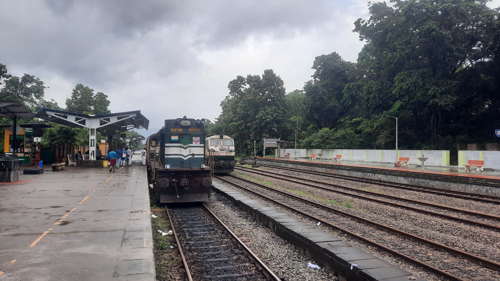
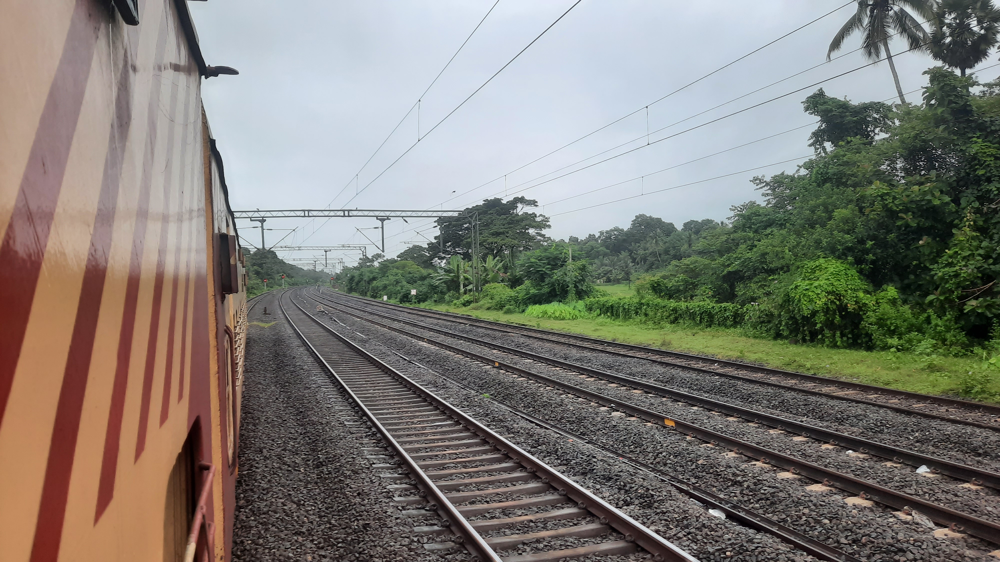
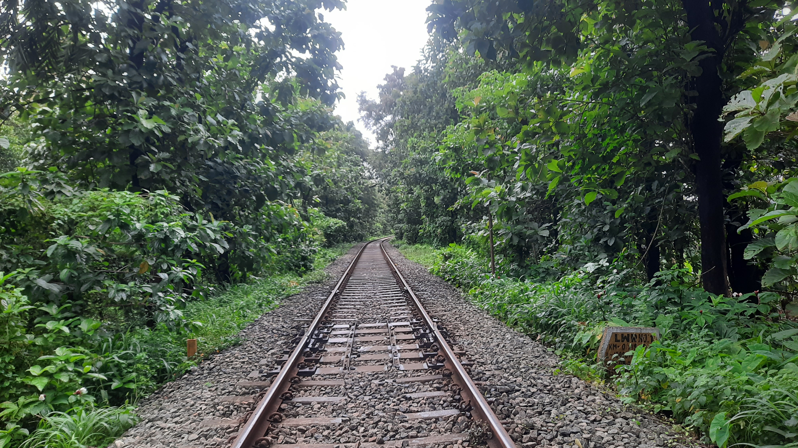
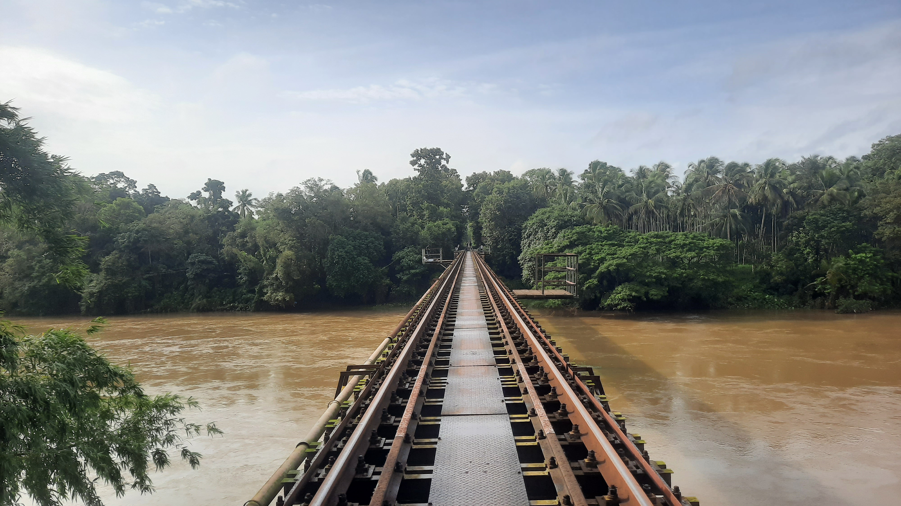
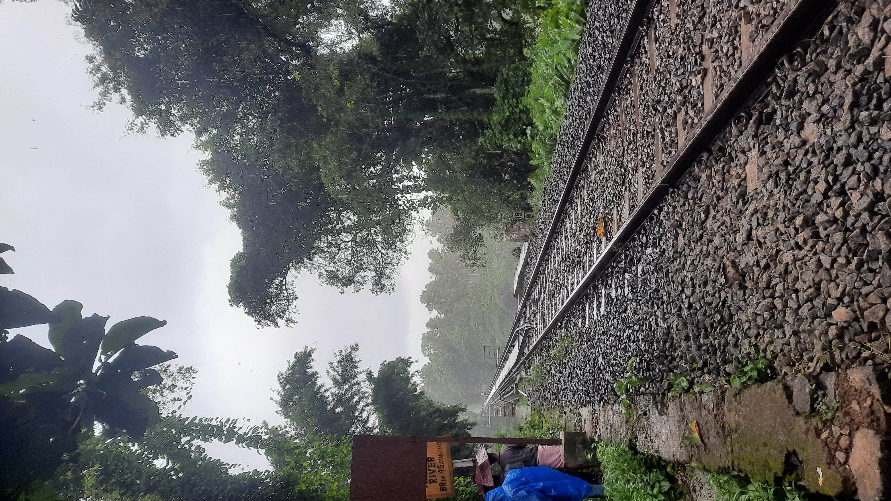
The Nilambur Trip
Introduction:
Embarking on an impromptu journey can often lead to the most memorable experiences. Our recent escapade through the scenic landscapes of Kerala was one such adventure. From the bustling MGR Chennai Central station to the tranquil beauty of Thiruvallur, our rail journey took us on an enchanting exploration of nature's wonders and the rich heritage of Indian Railways.
Chennai Central to Palakkad Junction:
With last-minute haste, we dashed through the bustling MGR Chennai Central station to catch the Trivandrum-bound Train 12624. On board, our growling stomachs found solace in the delicious dinner purchased from a hotel on Waltax Road. Anticipation filled the air as we hoped to witness the Jollapettai station whiz by at an exhilarating 110 km/h. However, due to a temporary speed restriction, our excitement was curbed, and the station slipped away at a modest 60 km/h.
Palakkad Junction and the Nilambur Road Express:
The next morning, we alighted at Palakkad Junction, eager to continue our adventure. Our path led us to the Palakkad Nilambur Road Express, an unreserved train traversing the stunning landscapes of Kerala. As the train chugged along, we were greeted by breathtaking vistas and the first rays of the rising sun. The interplay of light and shadows enhanced the natural beauty around us, painting the journey with vibrant hues.
Enthralling Stations and Train Crossings:
Kerala's picturesque stations captured our hearts as the train wound its way through the countryside. Each stop offered a glimpse into the region's unique charm. The single-line track necessitated train crossings, where we witnessed the synchronized dance of engines making way for one another. These moments exemplified the efficiency and camaraderie of Indian Railways, where a sense of community prevails even amidst the hustle and bustle.
Nilambur Station's Treasures:
Our arrival at Nilambur station introduced us to its hidden treasures. We were captivated by the sight of a locomotive maneuvering through the rails, showcasing the finesse of railway operations. The station was adorned with a magnificent banyan tree, over 300 years old, standing as a testament to time and resilience. Pausing to appreciate nature's wonders, we marveled at the intricate interplay between the past and the present.
From Cherukara to Cherished Memories:
Resuming our journey aboard the Nilambur-Shornur passenger train, we alighted at multiple intermediate stations like Melattur and Cherukara. These short breaks offered us an opportunity for railfanning, immersing ourselves in the joyful world of trains. Our adventures took us to a famous railway bridge, where we set up camp to witness the passing trains. Beneath the bridge, a mighty river flowed, its rapid currents mirroring the excitement in our hearts.
Unpredictable Weather and Sudden Delights:
As evening descended upon us, an unexpected twist unfolded—a sudden downpour transformed the ambiance, lending a surreal touch to our railfanning experience. The raindrops danced on the tracks, blending with the rhythmic melodies of passing trains. We embraced the serendipitous weather change, allowing it to add an extra layer of enchantment to our memories.
Homeward Bound:
Reluctantly bidding farewell to the picturesque beauty of Cherukara, we boarded a train to Shornur. From there, we embarked on the final leg of our journey, joining the 12602 mail train that would carry us back home. Alighting at the Thiruvallur station, we left the cocoon of our rail adventure, filled with a renewed appreciation for the marvel
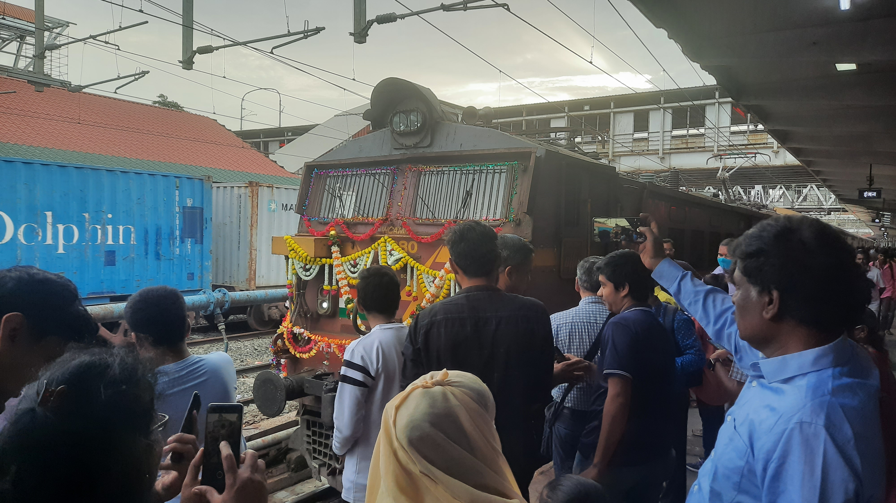

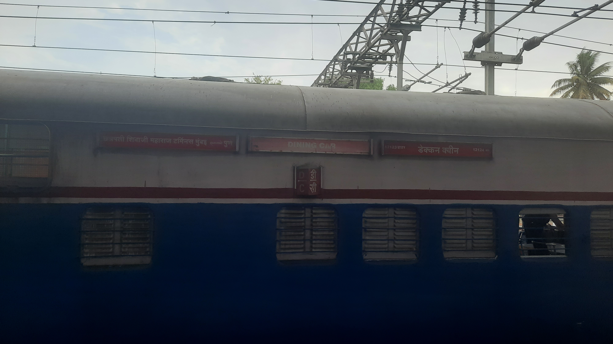
The Queen's Birthday ride
Introduction:
Embarking on a train journey can often be an exciting and memorable experience. Recently, I had the opportunity to be a part of a truly remarkable journey on the Deccan Queen Express, one of India's iconic trains, as it celebrated its 91st birthday. This blog recounts the delightful moments I experienced during this remarkable trip.
The Joyful Celebration:
As a passionate railfan, I was thrilled to witness the joyous atmosphere at the celebration of the Deccan Queen Express's 91st birthday. Railfans from different corners of the country had gathered to commemorate this special occasion. Their enthusiasm was infectious, and we were delighted to be a part of the festivities.
The Journey Begins:
Our journey commenced at Pune, the starting point of the Deccan Queen Express. We boarded the train and settled into our seats in the 2S coach. The anticipation in the air was palpable as we eagerly awaited the unique experiences that lay ahead.
The Restaurant on Wheels:
A remarkable feature of the Deccan Queen Express is the "Restaurant on Wheels," a canteen that is attached to the train. We started our day with a delicious breakfast in the canteen, relishing the sumptuous meal while marveling at the breathtaking ghat views passing by. It was a perfect way to begin our journey.
Entering Mumbai Territory:
As we approached Dadar Station, we crossed into the bustling city of Mumbai. The transition from the serene ghats to the vibrant cityscape was mesmerizing. The train's rhythmic movement and the sight of Mumbai's iconic landmarks in the distance filled us with excitement and awe.
Arrival at CSMT Station:
After a journey of three and a half hours, we finally reached the grand Chhatrapati Shivaji Maharaj Terminus (CSMT). Stepping out onto the platform, we felt a sense of accomplishment and joy. We couldn't resist capturing the memories with the old ICF Deccan Queen, knowing that this would be its last birthday celebration with ICF coaches.
Reflecting on the Journey:
As we walked out of the station, we couldn't help but engage in animated conversations about the incredible journey we had just experienced. The camaraderie among fellow railfans was heartwarming as we reminisced about the beautiful scenery, the delicious food, and the overall celebratory atmosphere.
A Surprising Encounter:
To our pleasant surprise, we stumbled upon the new LHB Deccan Queen Express stationed at CSMT Platform for an official inspection and media publicity. We seized the opportunity to admire the elegant coaches and observe the meticulous inspection conducted by the General Manager of Central Railways. It was a truly special moment for all rail enthusiasts present.
Continuing the Adventure:
After bidding farewell to the Deccan Queen Express, we made our way to a nearby railfanning location post Virar. Our journey was far from over as we eagerly anticipated capturing more railway moments, discussing our shared passion, and relishing the memories of the birthday celebration.
Conclusion:
The journey on the Deccan Queen Express to celebrate its 91st birthday was undeniably one of the most memorable experiences of my life. From the festive atmosphere to the stunning landscapes, from the delightful culinary delights to the unexpected encounter with the new LHB coaches, every moment was etched in my heart. As I reminisce about this extraordinary journey, I am reminded of the joy and camaraderie that rail travel brings, connecting people through a shared love for trains.
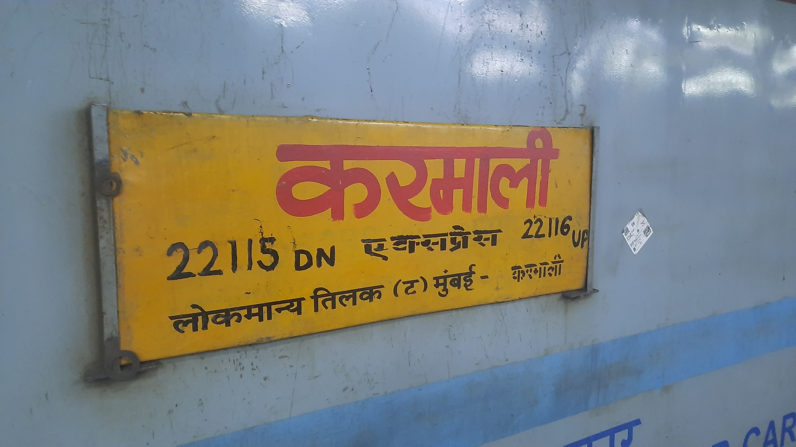
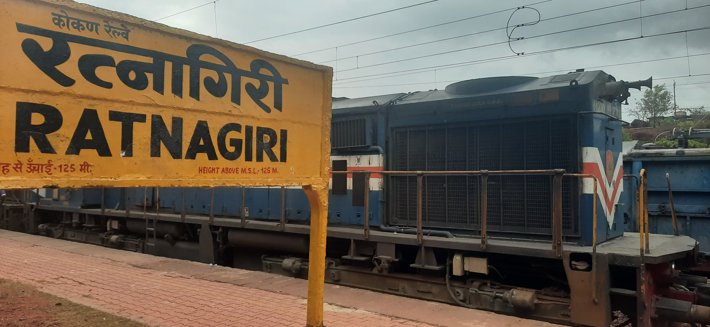
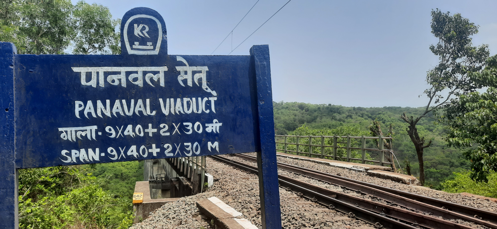
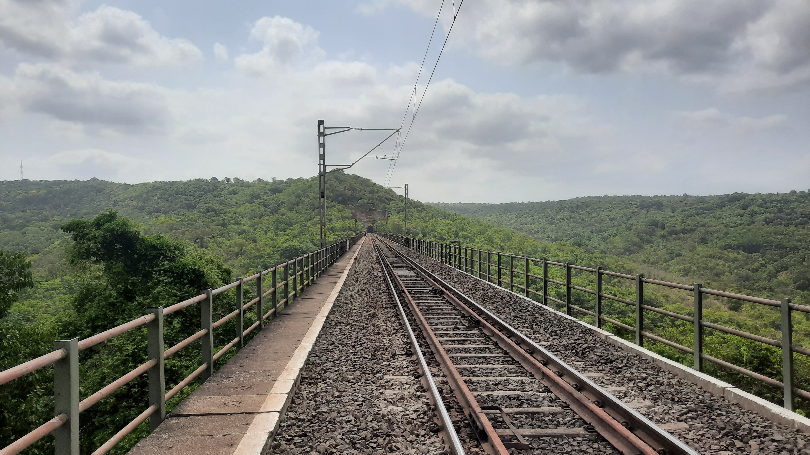
Exploring Mumbai and the Enchanting Konkan Region: A Train Lover's Paradise
Introduction:
Embarking on a thrilling adventure, we recently had the opportunity to explore Mumbai city and immerse ourselves in the mesmerizing beauty of the Konkan region. Our journey included train rides, railfanning, and captivating encounters with the scenic landscapes along the way. Join us as we recount our unforgettable experience through the bustling city of Mumbai and the enchanting Konkan Railway.
A Day in Mumbai:
Our adventure began with the much-anticipated Deccan Queen birthday ride, an iconic train journey that set the tone for our exploration. After the ride, we decided to roam around Mumbai and delve into the suburban lines of Western Railway (WR) and Central Railway (CR). As railfans, we couldn't resist the allure of Sophale, where we spent time indulging in railfanning activities. When night fell, we made our way to the LTT station to catch the Karmali AC Super Fast Express, eagerly anticipating the Konkan Railway ride that awaited us.
Embracing the Konkan Railways:
Arriving in Ratanagiri in the early morning, we disembarked from the Karmali AC Express, bags in tow, and approached the station master to secure a room to store our belongings. Thankfully, we were able to find a room for a nominal fee of 100 rupees. With our bags safely stowed, we set out for the Panvel Viaduct, arranging for a taxi to transport us there. After negotiating a fair price of 3000 rupees for pick-up, waiting, and drop-off at Ratanagiri station, we embarked on our journey.
Panvel Viaduct and Train Spotting:
At the Panvel Viaduct, we witnessed a breathtaking sight. From atop the viaduct, we beheld the stunning vistas of the Konkan region. Although the day was sunny and there were few people around, the passing trains provided us with an awe-inspiring spectacle. Emerging from one tunnel only to disappear into another, the trains painted a picturesque scene against the backdrop of the Konkan landscape. Throughout our time there, we had the pleasure of spotting nine trains traversing the viaduct. Eventually, we decided to explore other locations and made our way to Nivasar station, where we captured a few more trains in our lenses before returning to Ratanagiri station.
An Unforgettable Ride:
Later in the evening, we eagerly boarded the Hapa Madagoan Weekly Express, an experience that would forever be etched in our memories. To our surprise, we encountered a familiar face—an LP (locomotive pilot) from our railfanning community—who happened to be the one driving our train. This unexpected encounter presented us with a golden opportunity to engage in discussions about the technical operations of the Konkan Railways. As we conversed, we absorbed valuable insights, making the journey all the more special. Alas, we bid farewell to the locopilot upon reaching Kudal station, as our paths diverged.
Night Railfanning and Rest at Kudal Station:
Upon our arrival at Kudal station, we decided to indulge in some night railfanning. However, exhaustion soon caught up with us, prompting us to book affordable accommodation in the form of an IRCTC retiring room at the station. Eager to rejuvenate ourselves, we retired early and refreshed in the early hours of the morning. At 4 am, we boarded the Dadar Tirunelveli Express, commencing our journey to Madgoan.
Experiencing Mangalore and Homeward Bound:
After arriving in Madgoan and satiating our hunger with a hearty breakfast, we embarked on a train journey to Mangalore. At Mangalore Junction station, we found ourselves in a state of blissful relaxation. Surprisingly, we stumbled upon AC dormitories at MAQ station, available at a reasonable price of 200 rupees. As the day progressed, two of our fellow railfans departed, homeward bound. Meanwhile, we awaited the West Coast Express, which had been rescheduled for late night departure. The extended wait allowed us ample time to soak in the ambience of the station. Finally, the time came to board the train, drawing our thrilling adventure to a close.
Conclusion:
Our journey through Mumbai and the Konkan region left an indelible mark on us, providing an extraordinary experience for train lovers and nature enthusiasts alike. From the vibrant cityscape of Mumbai to the picturesque beauty of the Konkan Railway, every moment was filled with awe and wonder. We wholeheartedly recommend that everyone seize the opportunity to visit this captivating region at least once in their lifetime. It's a journey that promises to leave you with cherished memories and a profound appreciation for the magnificence of India's railway network and natural landscapes.